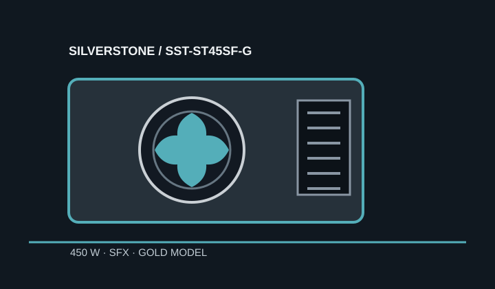

[ POWER CONVERSION // IDENTIFIED MODEL ]
SilverStone ST45SF-G (SST-ST45SF-G)
Exact suffix ST45SF-G, manufacturer SKU SST-ST45SF-G; do not substitute specifications for the distinct ST45SF non-G model.

HIGH-VOLTAGE SAFETY: Never open or probe a PSU; hazardous voltages can persist when disconnected.
Verified model specifications
| Model / rated output | SilverStone ST45SF-G / SST-ST45SF-G; 450 W total maximum output. |
|---|---|
| Form factor / dimensions | SFX; 125 × 100 × 63.5 mm (manufacturer-listed order: length × width × height). An ATX adapter bracket supports cases with compatible mounting. |
| DC output rails | +3.3 V: 19 A; +5 V: 14 A; combined +3.3 V/+5 V: 90 W; +12 V: 37 A / 444 W; −12 V: 0.3 A; +5 VSB: 2.5 A. |
| Efficiency claim | 80 PLUS Gold, identified in SilverStone's ST45SF-G material. |
| Cable-end connector counts | Modular cable inventory: 20/24-pin motherboard ×1; EPS/ATX12V 8/4-pin ×1; PCIe 8/6-pin ×1 plus PCIe 6-pin ×1; SATA ×3; Molex ×2; floppy ×1. Check the exact supplied cable revision. |
| Revision and cable cautions | Follow the ST45SF-G V1 manual only where it matches the unit label. This Gold model is distinct from ST45SF; do not presume its modular leads fit other SilverStone units. |
Compatibility & safe installation
- Check exact case mounting and the SFX length; assess cable bend room and the mounting bracket orientation.
- At 450 W and 444 W on +12 V, this older connector mix is not a default fit for modern high-power GPU systems. Match GPU connectors and load requirements before use.
- Never interchange modular cables by brand or appearance; PSU-side pinouts are model-specific.
- Disconnect from mains for external inspection and never open or probe the assembly.
Manufacturer sources
- SilverStone ST45SF-G product pageManufacturer model identity, form factor and efficiency-tier information.
- SilverStone ST45SF-G V1 manualManufacturer dimensions, model-specific output rail table and cable connector inventory.